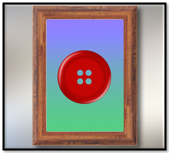

~4 Frames as Canvases~
11/3/2025
What Is a Frame in Tkinter?
Imagine a frame as a blank canvas within your window. It doesn’t show off by itself—it waits patiently to hold your brushstrokes. In Tkinter, a Frame is a widget that helps you organize other widgets. It’s like a painter’s panel, ready to hold a cluster of buttons, labels, or dropdowns in one tidy space.
In a python file
frame = tk.Frame(root)
frame.pack(pady=10)
Why Use Frames?
- To group related widgets together (like a palette of fruit options).
- To control layout more precisely.
- To keep your code organized and modular.
Think of each frame as a stitched panel in a quilt—each one tells part of the story.
Creating Your First Frame
Let’s build a frame to hold our fruit selection widgets. Instead of placing everything directly on root, we’ll place them inside a frame.
In a python file
fruit_frame = tk.Frame(root)
fruit_frame.pack(pady=10)
Now, place your widgets inside fruit_frame:
In a python file
fruit_label = tk.Label(fruit_frame, text="Select your favorite fruit:")
fruit_label.pack()
fruit_dropdown = ttk.Combobox(fruit_frame, values=["Apple", "Banana", "Cherry", "Date"])
fruit_dropdown.pack()

Adding a Button Frame
Let’s create a second frame just for the button. This keeps your layout clean and lets you style it separately if you wish.
In a python file
button_frame = tk.Frame(root)
button_frame.pack(pady=10)
submit_button = tk.Button(button_frame, text="Submit", command=lambda: on_button_click())
submit_button.pack()
The Full Code Example
import tkinter as tk
from tkinter import ttk
root = tk.Tk()
root.title("Frames as Canvases")
root.geometry("400x300")
# Fruit selection frame
fruit_frame = tk.Frame(root)
fruit_frame.pack(pady=10)
fruit_label = tk.Label(fruit_frame, text="Select your favorite fruit:")
fruit_label.pack()
fruit_dropdown = ttk.Combobox(fruit_frame, values=["Apple", "Banana", "Cherry", "Date"])
fruit_dropdown.pack()
# Label to show selection
submit_label = tk.Label(root, text="")
submit_label.pack(pady=5)
def on_button_click():
selected_value = fruit_dropdown.get()
submit_label.config(text=f"You selected: {selected_value}")
# Button frame
button_frame = tk.Frame(root)
button_frame.pack(pady=10)
submit_button = tk.Button(button_frame, text="Submit", command=lambda: on_button_click())
submit_button.pack()
root.mainloop()
Just like a painter chooses where to place each stroke, you now have the power to place your widgets with intention. Frames give your application structure, rhythm, and clarity. They’re not just containers—they’re canvases for your creativity.